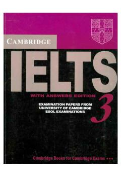

CIIELTS imtihoniga tayyorgarlik ko'rish uchun rasmiy amaliy testlar to'plami.
Ushbu kitob ingliz tilini bilish darajasini baholovchi IELTS imtihoniga tayyorgarlik ko'rish uchun mo'ljallangan rasmiy sinov materiallarini o'z ichiga oladi. Unda amaliy testlar, topshiriqlar va ularning javoblari keltirilgan bo'lib, talabalar va o'qituvchilar uchun juda foydali qo'llanma hisoblanadi.